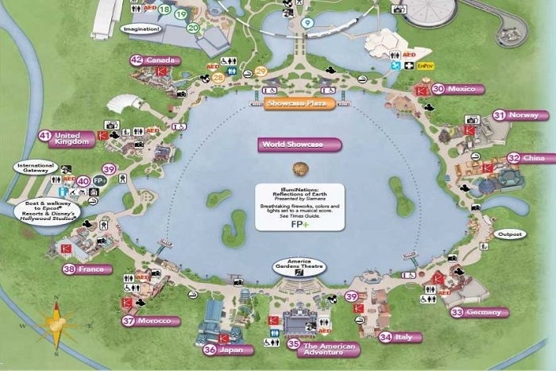
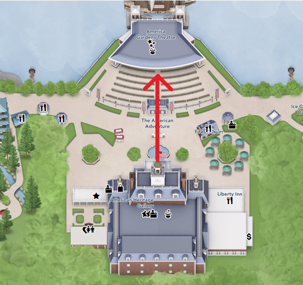
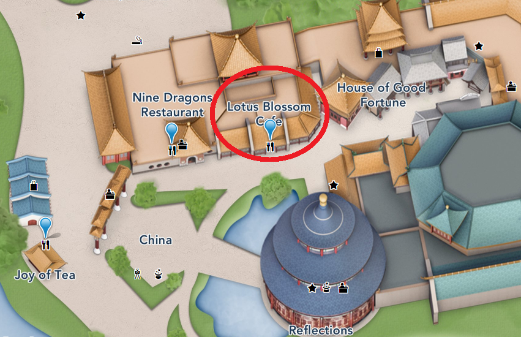
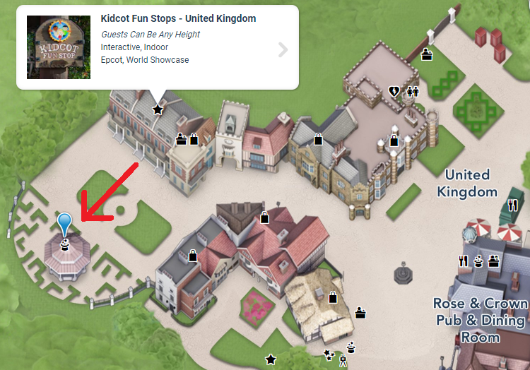
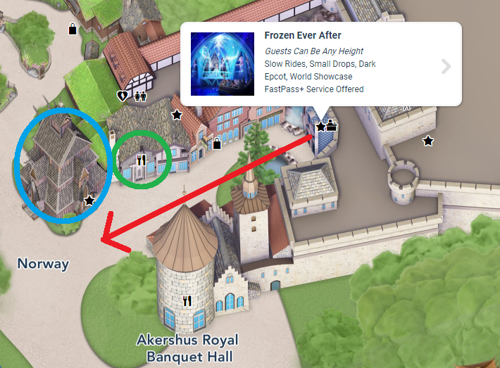
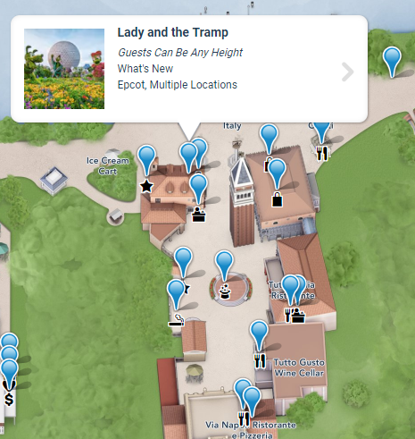
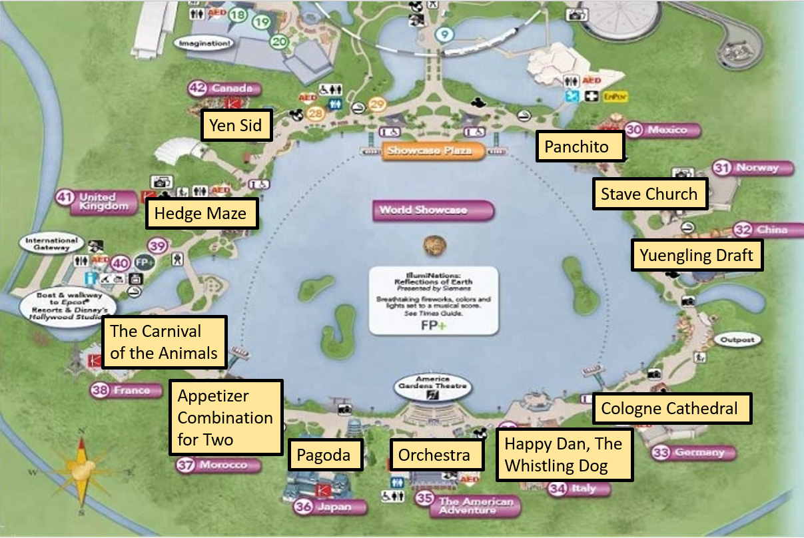

Solution: Visitor’s Guide
Answer: PSYCHOPATHY
Written by Josh Alman
Each of the eleven paragraphs is cluing two things: it is addressed to a specific person or character, and it gives instructions to get a word or phrase by following strange instructions. After identifying a few characters, we notice that they are all Disney characters, which helps us to identify the rest (quite possibly with the help of the Disney Wiki):
| Clue | Character | Disney Movie | Clue Notes |
|---|---|---|---|
| The princess finally agreed to explore outside the wall with you, her court lady! On your way to the golden flower, make sure to take in all the beautiful scenery. No matter how hard you look, you won’t find a model of this World Heritage Site, since the project to build it along the river was never funded. | Cassandra | Tangled: Before Ever After (and the follow-up series) | Cassandra is the court lady of Princess Rapunzel. She brings the princess to the golden flower in Tangled: Before Ever After, causing the princess to regain her golden hair. |
| You’re sick of being force-fed crackers. To eat something else, bring your friend to the local restaurant, and the two of you can share this starter with chicken and beef. | Iago | Aladdin | The Sultan feeds Iago quite a number of crackers. |
| After your breakdown at school, and the fight with your old friend over video chat, it’s time to run away from home. Across from the biggest building in town is a theater. If you go there this April Fool’s Day, a band whose name ends in this word will be playing. | Riley | Inside Out | Riley cries on her first day at her new school, and has a big fight with her friend Meg over video chat. This ultimately prompts her to run away from home to go back to Minnesota. |
| After almost being consumed by the matchmaker, you could really use a drink! Hop over to the innermost eatery in the country. They have three brand-name alcoholic beverages on their menu; this one is by the oldest of the three brewing companies. | Cri-Kee | Mulan | Cri-Kee winds up in the tea cup which the matchmaker is about to drink, and Mulan causes quite a scene trying to fix the situation. |
| You’re going to need some musicians to help you out if you want to keep singing about your phony ruler. You can find some across from the fun stop, but they’re guarded by one of this type of two-word obstacle. You’re tall enough that it shouldn’t pose you much of a challenge. | Little John | Robin Hood | Little John raises everyone’s spirits by playing his song The Phony King of England in Sherwood Forest. |
| Now that everyone knows what powers you have, you’ll need to flee the kingdom. On your way out, pass the cafe up ahead, then the next building on your right will be a replica of one of these structures (in English). | Elsa | Frozen | Elsa accidentally reveals her magical control over coldness to the kingdom and visitors of Arendelle. This causes her to flee the kingdom, covering it in snow, and sing Let It Go. |
| It’s too bad you had that run-in with the bell. Before that, you would have easily gotten a table at the most popular restaurant in town, or even performed there! Look around for some gentlemen who can take you through the main dining room anyway, but take note: only this one of them is a local. | Ernesto de la Cruz | Coco | Ernesto is one of the most famous musicians until he is crushed by a bell during a performance of “Remember Me.” He is later crushed by another bell in the land of the dead. |
| Your friend just turned into a donkey! Run away, or you’ll be next! If you’re quick enough, and go in the next couple of months, you’ll be able to see two characters in topiary form as you exit the whole area. They are originally based on this short story from a magazine. | Pinocchio | Pinocchio | Pinocchio’s friend Lampwick turns into a donkey, and Pinocchio is about to turn into one as well until he escapes the island with Jiminy Cricket. |
| As the punctual majordomo of a large castle, you might not have had the chance to explore the whole country. Since there’s a lot to see, you might want to take the tour. Near the beginning, you’ll glide through a swampy area while a song from this five-word musical suite is playing. | Cogsworth | Beauty and the Beast | Cogsworth is the Beast’s majordomo. |
| You’re famous! You’re now known all over the world as the dancer in red from the World Grand Prix welcome party! Head from the gate to the local store to buy something for yourself to celebrate, but as you do, admire this type of building on your left. | Okuni | Cars 2 | The three dancers are Tamiko, Okuni, and Shigeko. Okuni is the one who wears red. |
| Your name sounds like a local type of hat, and you suggested playing I Spy with your brother when the only thing in sight was a tree. Instead of playing games, try watching the nearby film instead. It’s now narrated by a comedian, but it used to be narrated by the voice actor of this sorcerer in a number of games. | Tuke | Brother Bear | Here’s the I Spy clip. His name is pronounced like toque. |
Reading the first letters of the characters in the given order tells us to CIRCLE EPCOT. Epcot is a theme park at Disney World consisting of two areas: Future World, and the World Showcase. The World Showcase consists of eleven pavilions corresponding to eleven countries of the world, in a circle around a lagoon. Each of the eleven characters we identified above is associated with one of the eleven countries. We can follow their instructions in their corresponding pavilions of Epcot as follows:
| Clue | Character | Country | Clue Answer | Clue Notes (the screenshots of Epcot maps come from the official Epcot map) |
|---|---|---|---|---|
| The princess finally agreed to explore outside the wall with you, her court lady! On your way to the golden flower, make sure to take in all the beautiful scenery. No matter how hard you look, you won’t find a model of this World Heritage Site, since the project to build it along the river was never funded. | Cassandra | Germany | Cologne Cathedral | Cassandra and Tangled are based on the German fairy tale “Rapunzel.” There was originally going to be a Rhine River Cruise attraction in the German pavilion, which would include a model of the Cologne Cathedral. |
| You’re sick of being force-fed crackers. To eat something else, bring your friend to the local restaurant, and the two of you can share this starter with chicken and beef. | Iago | Morocco | Appetizer Combination for Two | Although Aladdin takes place in the fictional city of Agrabah, characters from Aladdin can be met in the Morocco pavilion in Epcot. The main restaurant in the Morocco pavilion is the Restaurant Marrakesh, whose menu has the appetizer combination. |
| After your breakdown at school, and the fight with your old friend over video chat, it’s time to run away from home. Across from the biggest building in town is a theater. If you go there this April Fool’s Day, a band whose name ends in this word will be playing. | Riley | USA (The American Adventure) | Orchestra | Inside Out takes place in the US, as Riley moves from Minnesota to San Francisco. Across from the main building in The American Adventure pavilion is the America Gardens Theatre.Over the next couple of months is the Epcot International Flower and Garden Festival, one part of which is the Garden Rocks concert series at the America Gardens Theatre (this can be found, for instance, by clicking on the theatre in the official Epcot map). The schedule shows that The Orchestra (starring former members of the Electric Light Orchestra) will be playing on April 1st. |
| After almost being consumed by the matchmaker, you could really use a drink! Hop over to the innermost eatery in the country. They have three brand-name alcoholic beverages on their menu; this one is by the oldest of the three brewing companies. | Cri-Kee | China | Yuengling Draft | Mulan takes place in China. The innermost eatery in the China pavilion is the Lotus Blossom Cafe (the three eateries have blue markers below).Their menu has four alcoholic beverages: Tsing Tao, Budweiser Draft, Yuengling Draft, and Plum Wine. Since Plum Wine is not a brand name, Tsing Tao was founded in 1903, Budweiser in 1876, and Yuengling in 1829, the answer is Yuengling Draft. |
| You’re going to need some musicians to help you out if you want to keep singing about your phony ruler. You can find some across from the fun stop, but they’re guarded by one of this type of two-word obstacle. You’re tall enough that it shouldn’t pose you much of a challenge. | Little John | United Kingdom | Hedge Maze | Robin Hood is based on English folklore, and it takes place in Nottingham and Sherwood Forest. Across from the fun stop at the back of the United Kingdom pavilion is a bandstand where British Revolution plays.Surrounding the bandstand is a hedge maze. |
| Now that everyone knows what powers you have, you’ll need to flee the kingdom. On your way out, pass the cafe up ahead, then the next building on your right will be a replica of one of these structures (in English). | Elsa | Norway | Stave Church | Frozen takes place in the fictional kingdom of Arendelle, which was heavily based off of Norway. Many Frozen attractions and characters also appear in the Norway pavilion. Frozen Ever After is a ride through the kingdom of Arendelle from Frozen. If you leave it and head out of the Norway pavilion, you’ll first pass the Kringla Makeri Og Kafe on your right (circled in green below) then the next building on your right will be the Stave Church Gallery (circled in blue below).It is, indeed, a replica of a Stave Church. |
| It’s too bad you had that run-in with the bell. Before that, you would have easily gotten a table at the most popular restaurant in town, or even performed there! Look around for some gentlemen who can take you through the main dining room anyway, but take note: only this one of them is a local. | Ernesto de la Cruz | Mexico | Panchito Pistoles | Coco takes place in Mexico. The main attraction in the Mexico Pavilion is the Gran Fiesta Tour Starring the Three Caballeros (Note: Caballeros means Gentlemen). The ride starts off going through the main room of the big Mayan Pyramid, which is also where the dining room of the main restaurant, the San Angel Inn Restaurante, is. Of the Three Caballeros, only Panchito is from Mexico; Donald is from the US, and José is from Brazil. |
| Your friend just turned into a donkey! Run away, or you’ll be next! If you’re quick enough, and go in the next couple of months, you’ll be able to see two characters in topiary form as you exit the whole area. They are originally based on this short story from a magazine. | Pinocchio | Italy | Happy Dan, The Whistling Dog | Pinocchio is based on the Italian children’s novel The Adventures of Pinocchio, and several characters in the movie have Italian names and accents. Over the next couple of months is the Epcot International Flower and Garden Festival, which includes many topiaries. Right at the entrance to the Italy pavilion are topiaries of Lady and the Tramp. See the full list of topiaries here (click “Read More” under the heading “Topiary Magic Awaits”).Lady and the Tramp was based on Happy Dan, The Whistling Dog by Ward Greene, which Walt Disney read in Cosmopolitan Magazine. |
| As the punctual majordomo of a large castle, you might not have had the chance to explore the whole country. Since there’s a lot to see, you might want to take the tour. Near the beginning, you’ll glide through a swampy area while a song from this five-word musical suite is playing. | Cogsworth | France | The Carnival of the Animals | Beauty and the Beast takes place in France. The main attraction of the France pavilion is Impressions de France, an 18-minute film which tours much of the country. Looking at the list of scenes for the film, we see that the scene being referenced is scene 2, where you glide through the Marais Poitevin, a swamp area. The film’s soundtrack shows that the music playing during scene 2 is “Aquarium” from The Carnival of the Animals. |
| You’re famous! You’re now known all over the world as the dancer in red from the World Grand Prix welcome party! Head from the gate to the local store to buy something for yourself to celebrate, but as you do, admire this type of building on your left. | Okuni | Japan | Pagoda | Okuni is a Kabuki dancer when the World Grand Prix visits Japan in Cars 2. The instructions tell us to go from the main traditional gate at the front of the Japan pavilion to the Mitsukoshi Department Store (circled in green below).  As we walk, on the left (circled in blue above) is the pagoda at the Japanese pavilion. As we walk, on the left (circled in blue above) is the pagoda at the Japanese pavilion. |
| Your name sounds like a local type of hat, and you suggested playing I Spy with your brother when the only thing in sight was a tree. Instead of playing games, try watching the nearby film instead. It’s now narrated by a comedian, but it used to be narrated by the voice actor of this sorcerer in a number of games. | Tuke | Canada | Yen Sid | Tuke and his brother Rutt are Canadian Moose. The main attraction at the Canada pavilion is O Canada!, a Circle-Vision 360° film showcasing Canada. It is now narrated by Martin Short, but it used to be narrated by Corey Burton. Burton has voiced a number of characters in video games, but the only sorcerer is Yen Sid (the teacher of Mickey Mouse in The Sorcerer’s Apprentice). |
Reading the first letters of the clue answers in clockwise order around the World Showcase Lagoon (as clued by “CIRCLE” from before) gives us the final answer: PSYCHOPATHY.
Author’s Notes
One of my favorite types of puzzles in on-site puzzle hunts is “runarounds”, where you are typically given instructions to run through a place of interest, like a public building or park, and gather information as you go. Such a puzzle is hard to make for an online hunt, since teams aren’t all in the same physical location, but this puzzle is intended to be a runaround you can do entirely online. In fact, an earlier version of the puzzle only had instructions for going around the countries of Epcot, without the Disney character clues, and had the solver match up instructions to countries just by seeing which instructions could reasonably be followed in each country. I think the Disney character identification adds a fun first step and makes the second step a bit easier. I suspect many teams will make the connection to Epcot and solve the puzzle without noticing the “CIRCLE EPCOT” clue, though.
I would have liked to use characters who are less obscure than, for instance, Cassandra and Okuni, but there aren’t very many Disney characters to choose from who come from some of the countries.
If you enjoyed this puzzle, and ever find yourself in Epcot, make sure to try out Agent P’s World Showcase Adventure, a real Epcot runaround-style puzzle which this puzzle was inspired by.